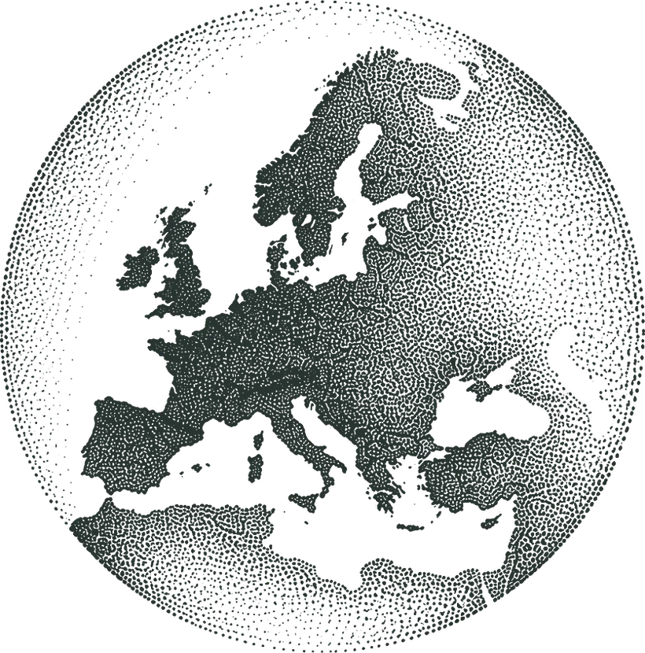
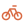
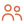
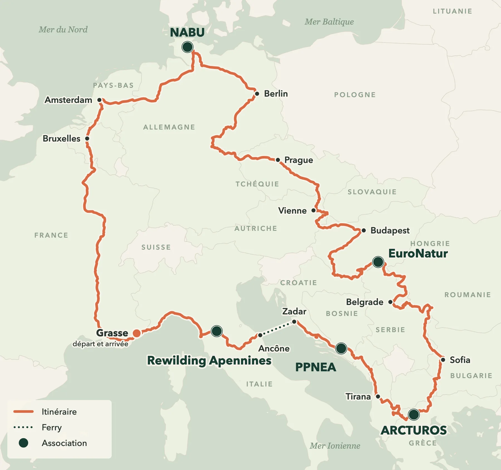

Projet étudiant et associatif
À vélo pour celles et ceux qui protègent le vivant
Trois étudiants, trois vélos, km à travers l’Europe, , à la rencontre d’associations de protection de la biodiversité.

Le projet
Une boucle européenne pour rencontrer ceux qui protègent la nature
Nous sommes trois étudiants de l’Institut Agro Montpellier. Pendant mois, nous traversons l’Europe à vélo pour rencontrer cinq associations qui protègent des espèces menacées (ours, lynx, loup, cigognes) et raconter leur travail.

Rouler
Trois vélos, en autonomie, sur les petites routes et les voies vertes quand c’est possible.

Rencontrer
Cinq associations. Sur place, nous donnons un coup de main et nous interviewons celles et ceux du terrain.
Partager
Photos, vidéos et récits au fil de la route, ici, sur Instagram et sur TikTok. Et une cagnotte pour soutenir les associations.
L’itinéraire
De la Côte d’Azur à la mer du Nord, par les Balkans
Des Apennins aux Balkans, du Danube à la mer du Nord : un seul trajet, cinq rencontres.

Journal de bord
Dernières nouvelles
Les associations
Cinq associations, cinq espèces à protéger
Chacune a son terrain, son espèce, ses combats. Nous irons les voir, et nous donnerons la parole à celles et ceux qui y travaillent.
Ils nous soutiennent
Soutenir
Donner un coup de pouce à celles et ceux qui protègent le vivant
La cagnotte TRIADE soutient les associations que nous rencontrons.